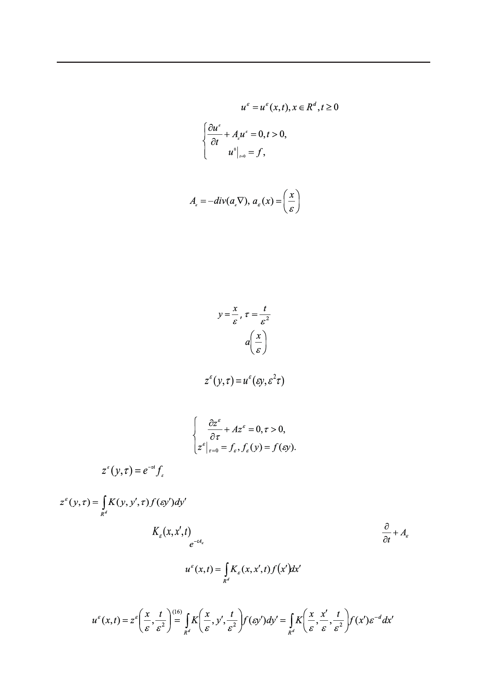

Асимптотика решения уравнения диффузии в периодической среде на больших временах
и ее применение к оценкам усреднения
Раздел 3
Рассмотрим задачу Коши для функций
,
с малым параметром ε ˃ 0 , где
и a(y) – 1-периодическая измеримая симметрическая матрица, удовлетворяющая усло-
вию (2). Имеем здесь оператор диффузии с быстро осциллирующими ε-периодическими
коэффициентами. Оператор Aε сильно неоднородный. Встает задача об его усреднении,
то есть о его замене на оператор с постоянными коэффициентами, который в определен-
ном смысле близок к нему.
Автомодельная замена
сводит задачу с ε-периодической матрицей
a(y). Именно, функция
к задаче с 1-периодической матрицей
есть решение задачи Коши
Тогда
, или в обозначениях раздела введение.
.
(16)
Обозначим через
фундаментальное решение для оператора
ядро интегрального оператора . Тогда
.
С другой стороны,
, т.е.
,
66
Российский технологический журнал 2017 Том 5 № 5